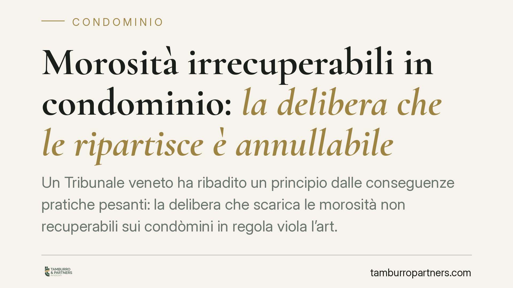

Morosità irrecuperabili in condominio: la delibera che le ripartisce è annullabile
Un Tribunale veneto ha ribadito un principio dalle conseguenze pratiche pesanti: la delibera che scarica le morosità non recuperabili sui condòmini in regola viola l'art. 1123 c.c., ma è soltanto annullabile, non nulla. Significa che, se non impugnata nel termine breve, diventa definitiva e vincolante. Una distinzione che decide chi paga oltre ottantamila euro.

Il caso
Un condominio accumula morosità per circa 80.562 euro, somme ritenute non più recuperabili da uno o più condòmini inadempienti. L'assemblea delibera di ripartire quel debito tra gli altri partecipanti, in regola con i pagamenti. Due società proprietarie contestano la scelta.
Il Tribunale ha qualificato la delibera come annullabile, non nulla, per violazione dei criteri legali di ripartizione delle spese. La qualificazione non è un dettaglio formale: incide direttamente sulla sorte della delibera e sul destino di quella somma.
*Nota: il riferimento è a una pronuncia di merito recente del Tribunale di Vicenza. Gli estremi esatti vanno verificati sulla fonte ufficiale prima di qualunque uso in sede difensiva.*
Inquadramento normativo
L'art. 1123 c.c. fissa i criteri di ripartizione delle spese condominiali: in proporzione al valore della proprietà di ciascuno, salvo diverso accordo. Da qui discende un principio consolidato: il debito del condòmino moroso resta suo. Non può essere automaticamente redistribuito su chi ha pagato regolarmente.
Il punto decisivo è però un altro: cosa succede quando una delibera viola questo criterio. Le Sezioni Unite della Cassazione (sent. n. 4806/2005) hanno tracciato la linea di confine tra nullità e annullabilità delle delibere assembleari. Sono nulle quelle prive degli elementi essenziali, con oggetto impossibile o illecito, o che incidono su diritti individuali non rinunciabili. Sono invece annullabili quelle affette da vizi relativi alla formazione della volontà o alla violazione di norme di ripartizione delle spese.
La ripartizione delle morosità sui condòmini virtuosi rientra in questa seconda categoria. È un vizio che rende la delibera impugnabile, ma non la priva di effetti in modo automatico.
Perché la distinzione conta
La delibera nulla può essere contestata senza limiti di tempo: chiunque vi abbia interesse può farla dichiarare inefficace, anche a distanza di anni. La delibera annullabile, invece, segue l'art. 1137 c.c.: deve essere impugnata davanti all'autorità giudiziaria entro trenta giorni. Il termine decorre dalla deliberazione per i presenti dissenzienti o astenuti, dalla comunicazione del verbale per gli assenti.
Scaduto quel termine senza impugnazione, la delibera diventa definitiva. Anche se illegittima nel merito, produce pienamente i suoi effetti. In concreto: chi era in regola e non ha reagito nei tempi si trova vincolato a pagare quote che, in origine, non gli competevano.
È qui che la qualificazione giuridica si traduce in denaro reale. La differenza tra impugnare entro trenta giorni o restare inerti può valere, nel caso descritto, decine di migliaia di euro.
L'incrocio con la mediazione obbligatoria
Prima di agire in giudizio in materia condominiale occorre tenere conto dell'art. 5 del D.Lgs. 28/2010, che prevede la mediazione come condizione di procedibilità: senza il tentativo di mediazione la domanda è improcedibile.
L'interazione con il termine di trenta giorni è delicata. La comunicazione dell'istanza di mediazione alle altre parti sospende il termine di decadenza per l'impugnazione: il termine riprende a decorrere dal deposito del verbale negativo o dallo spirare del periodo massimo del procedimento. Tradotto: l'avvio tempestivo della mediazione protegge il diritto di impugnare, ma solo se gestito con precisione cronologica. Un errore nel calcolo dei giorni può far scadere il termine e consolidare la delibera.
Il recupero corretto delle morosità
La strada legittima per gestire le morosità non è ribaltarle sui paganti, ma agire verso l'inadempiente. L'art. 63 disp. att. c.c. consente all'amministratore di ottenere un decreto ingiuntivo immediatamente esecutivo per la riscossione dei contributi approvati, sulla base dello stato di ripartizione. È lo strumento tipico e tempestivo per evitare che le somme diventino irrecuperabili.
Cosa fare in concreto
- Leggere il verbale appena ricevuto, verificando se contiene una ripartizione di morosità altrui e la data di comunicazione, da cui decorre il termine.
- Calcolare con precisione i trenta giorni ex art. 1137 c.c. e non attendere l'avvicinarsi della scadenza per decidere.
- Attivare per tempo la mediazione ex art. 5 D.Lgs. 28/2010, tenendo conto dell'effetto sospensivo sul termine di impugnazione.
- Per l'amministratore: agire con decreto ingiuntivo ex art. 63 disp. att. c.c. contro il moroso, prima che il credito diventi di difficile recupero.
- È opportuno sottoporre il verbale a valutazione tecnica tempestiva, perché i margini di reazione sono stretti e decadenziali.
---
Contributo informativo a cura di Tamburro & Partners Avvocati. Non costituisce parere legale.
Ogni condominio ha una storia a sé.
Se gestisci un'amministrazione e vuoi un confronto su una specifica questione condominiale, scrivi allo studio. Ti rispondiamo entro un giorno lavorativo.